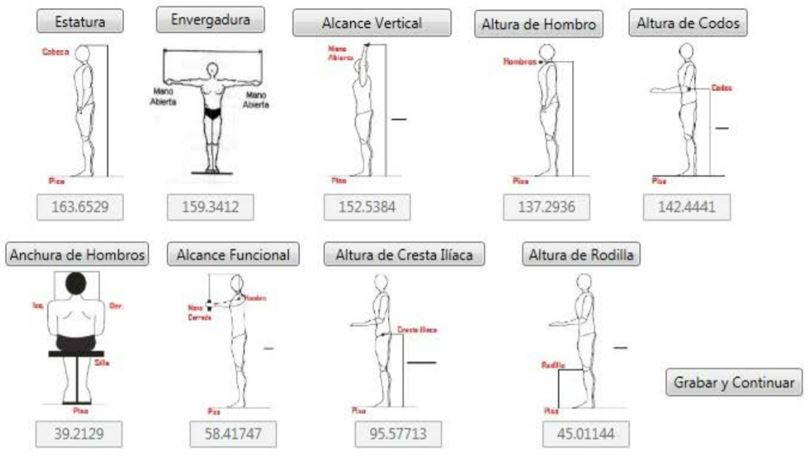
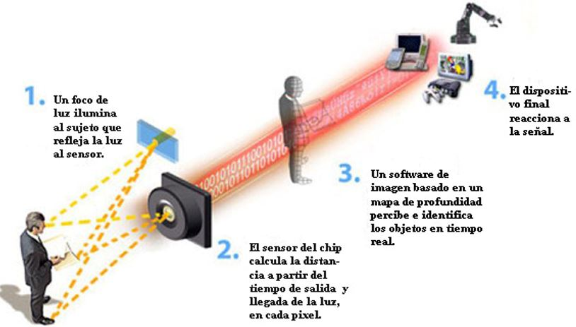
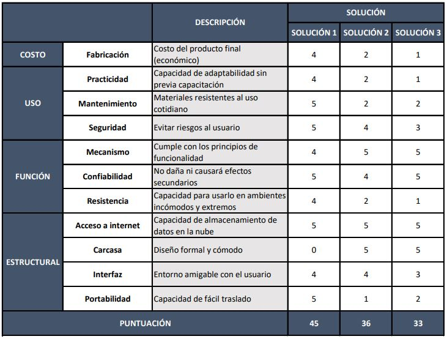

1. PROPUESTAS DE SOLUCIÓN
1.1. SOLUCIÓN NÚMERO 1: APP COMO SISTEMA DE REGISTRO Y SOFTWARE PARA LA SIMULACIÓN
Esta solución estará dividida en dos partes tanto la creación de una app para el registro de datos y la de un software para el procesamiento de información.
Por un lado, la realización de una app que proporcione un sistema de registro de los datos antropométricos, mediciones físicas y entre otras de una forma rápida y portable. Logrando así tomar y enviar la información a una base de datos para que esta pueda ser utilizada posteriormente. Para acceder a esta app se necesitará de un registro previo, ya que únicamente estos datos deben de ser ingresados por un profesional calificado. También el IPD cuenta con dispositivos electrónicos como tablets, completamente nuevas, que serán usadas para lograr el funcionamiento de esta nueva app interactiva de recaudación de información.
Asimismo, se desea crear un generador de una silueta del ser humano, para así mediante el ingreso de algunos datos específicos como tamaño, peso, cantidad de masa muscular, entre otros lograr generar una simulación de un cuerpo humano y así lograr tener una mayor referencia para que los atletas puedan tener conocimiento de los resultados que deben de alcanzar para ser atletas competitivos de alto rendimiento. Por otro lado, el software brindara un procesamiento de los datos obtenidos de la app, logrando así diversos datos estadísticos en masa de grasa, masa muscular, masa ósea, masa residual, masa de piel y la relación que hay entre hueso y musculo.
1.2. SOLUCIÓN NÚMERO 2: USO DE FOTOGRAMETRÍA PARA DISEÑO EN 3D DEL ATLETA
Según el libro “Introduction to Photogrammetry” por T. Schenk, se dice que no hay una definición universal aceptada de fotogrametría, pero la noción más importante de esta es que es la ciencia de obtener información sobre las propiedades de superficies y objetos sin contacto físico con estos, de esta manera medir e interpretar esta información. La forma de esta información puede ser desde fotografías hasta patrones de energía electromagnética radiante de los objetos.
La manera más sencilla de aplicar la fotogrametría sería la obtención de un diseño tridimensional basándose en la toma de fotos al objeto a diseñar en distintas posiciones. Es decir, obtendremos información tridimensional de información bidimensional.

Figura 1. Ejemplo de obtención de imagen tridimensional con recolección de fotografías en distintos ángulos.(PhotoScan. 2019, de Instructables workshop)
Entonces, basándonos en esta técnica, se podría obtener la información antropométrica del atleta.
La obtención de las imágenes se podría conseguir con la toma de fotografías simultáneamente desde distintos puntos (Es importante evitar sombras y usar suficiente luz para que el sistema pueda reconocer entre el atleta y el fondo), softwares tales como Open SmartShooter son usados con este propósito además de poder realizar ajustes a las cámaras de manera simultánea.

Figura 2. Ejemplo de montaje y posicionamiento de las cámaras fotográficas. (144X DSLR. 2019, de Pixel Light Effects)
Una vez se hayan obtenido las imágenes, con uso de softwares se podrán importar y alinear estas de manera que se podrá obtener una primera vista del atleta en 3D.
Finalmente, mediante programas limpiar la “basura” existente en el modelo, que son principalmente partes del fondo (En la figura 1 se pueden observar como una nube blanca alrededor de la persona), una vez concluido este proceso, podremos obtener la imagen tridimensional la cual podremos usar para realizar las medidas necesarias en el mismo computador.
1.3. SOLUCIÓN NÚMERO 3: DESARROLLO DE UNA APP DE MEDICIÓN ANTROPOMÉTRICA BASADA EN KINECT
Esta solución presenta el desarrollo de una herramienta interactiva para tomar mediciones antropométricas utilizando el dispositivo Kinect de Microsoft como una alternativa complementaria a los dispositivos de medición disponibles, donde se miden a los usuarios mientras realizan movimientos específicos.
El principio de esta técnica se basa en tomar nueve medidas: altura, envergadura, alcance vertical, altura del hombro, altura del codo, ancho del hombro, alcance funcional, altura ilíaca y altura de la rodilla (1). Los cuales permite definir un perfil antropométrico básico para diseñar espacios ergonómicos a través de partes del cuerpo humano identificables con el Kinect.

Figura 3. Ejemplo de montaje y posicionamiento de las cámaras fotográficas. (144X DSLR. 2019, de Pixel Light Effects)
Luego de recolectar los datos antropométricos con el Kinect, se podrá analizar estas medidas con el uso de softwares especializados para generar un reporte y diagnóstico de la condición física del atleta.
Algunos factores a tomar en cuenta e para minimizar errores son: distancia kinect – usuario, la iluminación de la habitación, la ropa y el calzado que alteraron algunas articulaciones reconocidas.
En conclusión, las mediciones tomadas con este dispositivo son confiables al estar dentro de las diferencias de medias normales y diferencia de varianza, a pesar de los errores ocasionados por ciertos factores mencionados anteriormente.

Figura 4. Ejemplo de montaje y posicionamiento de las cámaras fotográficas. (144X DSLR. 2019, de Pixel Light Effects)
2. CONCEPTOS DE SOLUCIÓN
2.1. CONCEPTO NÚMERO 1: USO DE FOTOGRAMETRÍA PARA DISEÑO EN 3D DEL ATLETA
2.2. CONCEPTO NÚMERO 2:
2.3. CONCEPTO NÚMERO 3:
3. SOLUCIÓN ESCOGIDA:
La solución que escogimos es la número 1 ya que cumple con la mayoría de los requerimientos de diseño
Tabla 3
Evaluación de las soluciones.
Evaluación del 1 al 5.
